Purple Kush
Short and leafy, two blocks tall. Grows wild in jungles, swamps and lush caves.
(formerly GanjaCraft)
The cannabis mod for Minecraft, for stoners and hemprepreneurs. Grow weed in a field or under a lamp, smoke it, press it into hash, bake it into space cake, then build a fireproof house out of the leftovers.
Free, open source. On Fabric it only needs Fabric API. On NeoForge and Forge it needs nothing at all. Which file do I need?
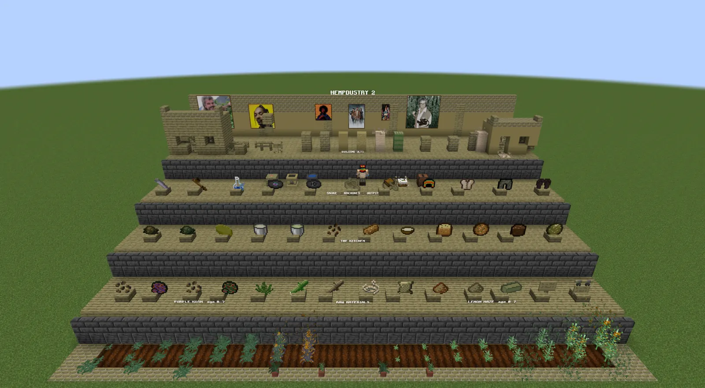
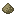
BuildThe biggest update since the rewrite. Same world, nothing to do: a save from any Hempdustry 2 version opens on 2.1.0.
Same mod, same numbers, on Fabric and NeoForge, and on Forge for 1.18.2 and 1.16.5. One download per loader and Minecraft version. Pick yours.
The Forge builds open GanjaCraft and Hemp-Craft worlds and turn them into Hempdustry worlds as they load. How.
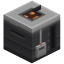
Grow pots, grow lamps and hydro trays. Below.
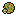
A third strain. Grows on sand by water and turns you invisible.
Kief, bubble hash, hashish, charas, rosin and moon rocks. Below.
The gentle one. Never greens you out.
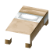
A hemp bed, shelf and parquet, a harness for the happy ghast, a leaf banner, and Marley.
2.1.0 on the new Minecraft, plus a few things only it can do. Below.
Everything else is in the changelog, and the wiki has the numbers.
Three strains, three very different plants.
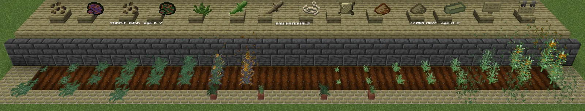
Short and leafy, two blocks tall. Grows wild in jungles, swamps and lush caves.
Three blocks tall, slower, wants headroom. Pays out in stems. Grows wild from savanna to badlands.
The Rif's landrace, the plant Moroccan hash came from. Won't touch farmland: it wants sand with water close by. Wild on desert riverbanks, seeds in desert temples and suspicious sand.
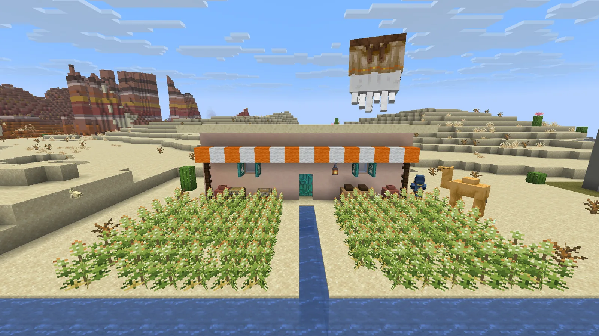
On the wiki: Strains Growing Hemp Finding Hemp
More buds, faster, and more ways to mess it up.
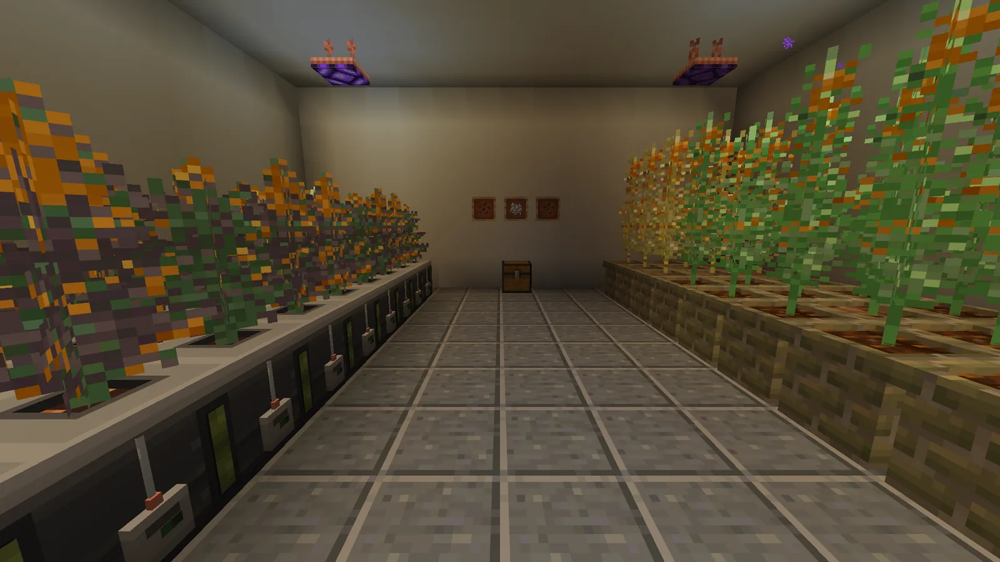
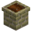
Water it with a bottle, feed it bone meal. Half again as fast as a good field, and pots pack wall to wall.
Hangs on copper chains, switches on like a redstone lamp. Two extra buds for every plant under it.
Water, fertiliser and a redstone signal for the pump. Twice as fast as the best field.
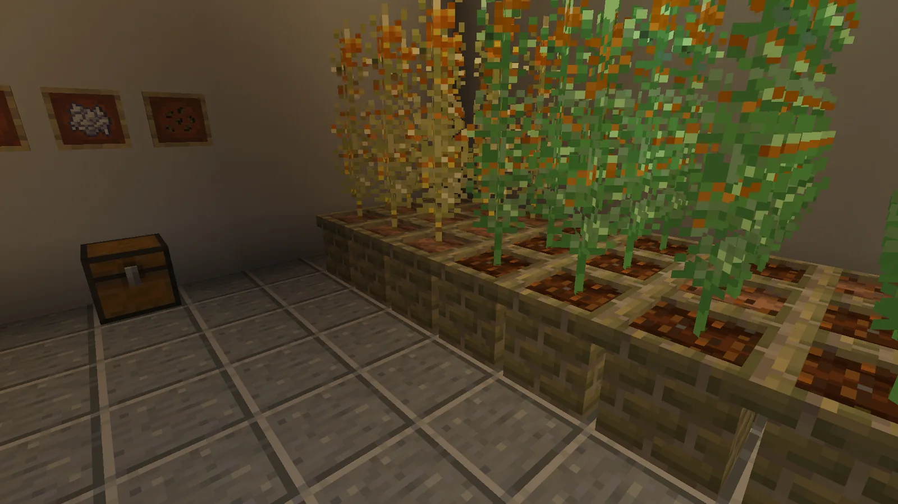
The plant remembers its light. Kill the lamp while it's flowering and it stresses: the colour drains out, the old leaves go brown, and you lose buds. A dry pot, a stopped pump or bone meal on a flowering plant can do it too.
A stressed plant also spoils some of its buds into schwag. Seedy, stemmy, weak. Smoke it and you'll probably just get poisoned. There's an advancement for that.
On the wiki: Indoor Growing
The device decides how long. The buds decide how hard.
Roll it, smoke it, gone. Crumble in some hash for a stronger one.
Pack it again and again. Takes enchantments, repairs on an anvil.
Bigger bowl, up to three buds. Hold the button and it bubbles while you draw.
One bud, level I, lasts longer than a pipe. Can't green you out.
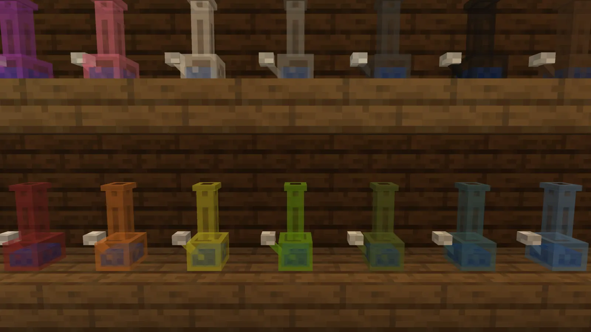
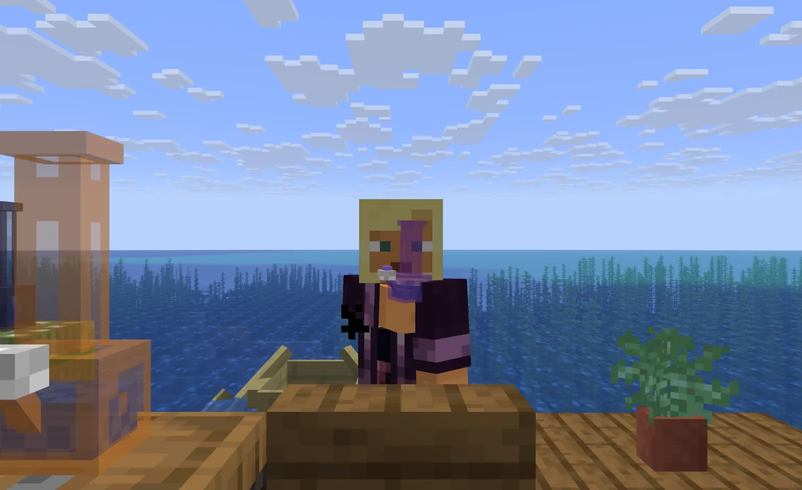
Bongs come in all sixteen stained-glass colors and you can set one down on a table. It's for show: pick it back up to smoke it.
More buds, stronger high, bigger downside. Buffs stop at level II like a beacon. The one way to III: pair a bud with a concentrate, a pinch of hash in a spliff or a moon rock in a bong.
Greening out is real. Go big and you might lose the hit and spend a while nauseous instead. At three it also wipes every buff you had and benches you for a minute. A single bud never does that.
On the wiki: Smoking Smoking Gear
The old ways, the ones that only need a screen, cold water, heat and pressure. No BHO, not happening.
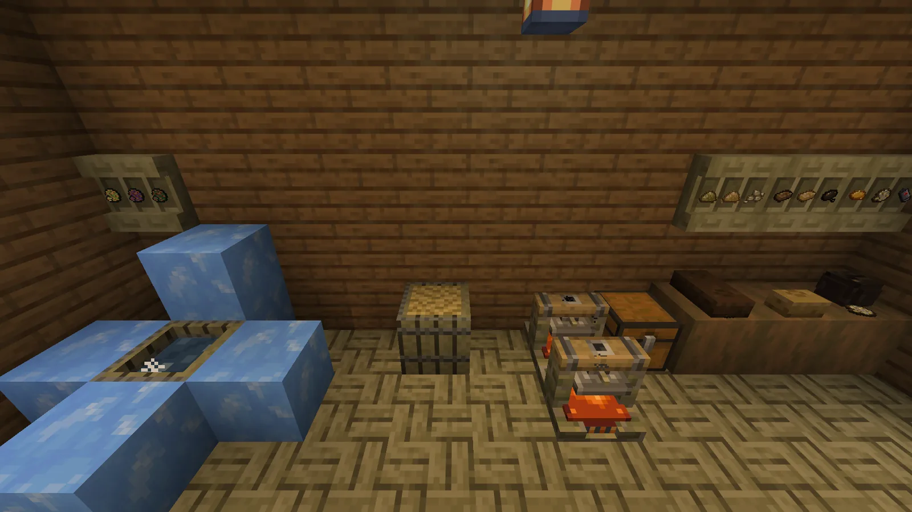
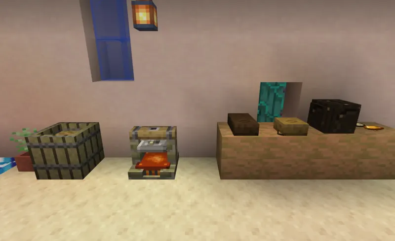
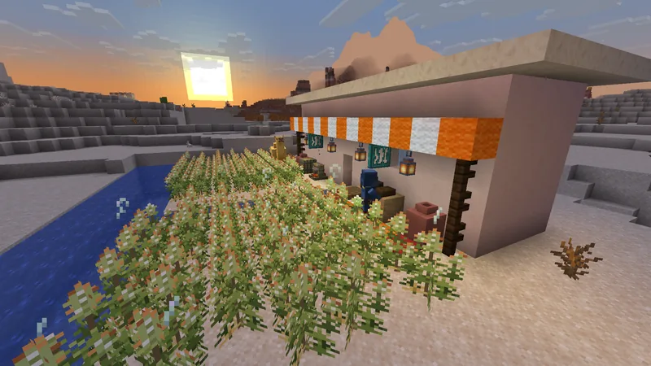
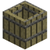
Fill it like a composter. Seven buds in, nine kief out. Sift the kief again for a cleaner grade.
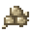
Fill the same box with water, put ice on all four sides: bubble hash. Plain ice melts if you light the room.
A screw press heated from below. Kief becomes hashish, the clean stuff becomes rosin.
The strongest thing in the mod. One piece fills a bong.
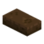
Nine pieces pack into a bar you can put on a shelf. Cut pieces off with a sword, five cuts, and watch it shrink.
Shear a ripe plant and sometimes rub off a pinch. The plant lives. Slow Falling.
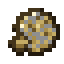
A bud, rosin and a coat of hash or kief. Bong only, and it reaches level III.
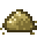
Kief, bubble hash, hashish, charas, rosin. Hold all five and there's an advancement in it.
Hash is for smoking only. The kitchen still runs on plant matter.
On the wiki: Hash and Concentrates
Real cannabutter, made the long way. Edibles are the endgame, not a day-one snack.
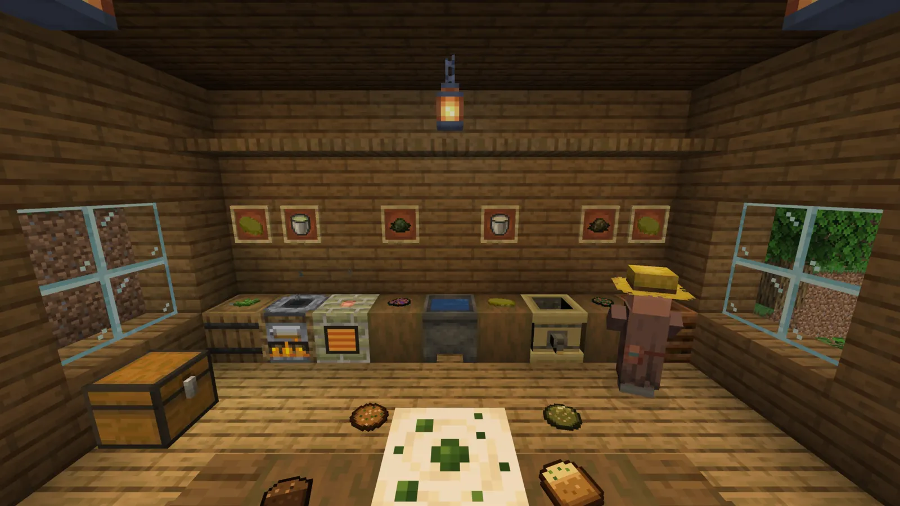
A hemp-brick oven with three trays.
Rinse it. Optional, but it makes better butter.
Pour in milk, light a fire under it, wait.
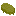
Strength and quality both count. Patience pays.
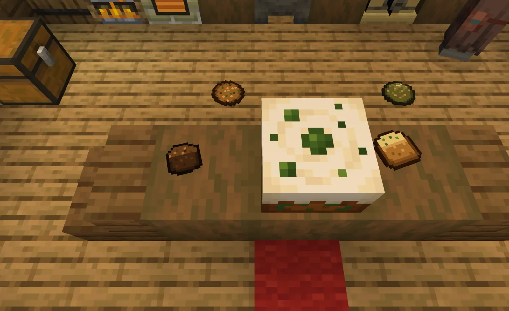
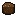
Space BrownieOne batch of butter makes eight cookies or a single dawamesk. Guess which one hits harder.
Edibles take thirty seconds to three minutes to kick in, and the worse the butter, the less you can predict it. Eating a second one because the first "isn't working" is a mistake the game will let you make.
Burnt a leaf in the furnace by accident? That's scorched hemp. The Infuser takes it, but four count as one and the butter never gets past the weakest grade.
Hemp milk works anywhere cow's milk does, Infuser and cake included. You never need to find a cow.
On the wiki: Cannabutter Edibles Hemp Food
Hemp was a fiber crop long before it was a vibe. The planks are fireproof, like Crimson and Warped wood.
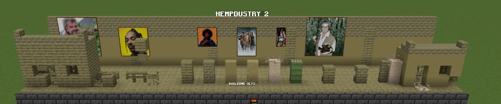
The powder sets in water, like concrete.
Full set of stairs, slabs and walls.
Doors, trapdoors, fences, signs, boats, a shelf. The works.
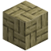
A basket-weave floor, with stairs and a slab.
Stands in for leather and wool. Beds, books and bundles without a sheep or a cow.
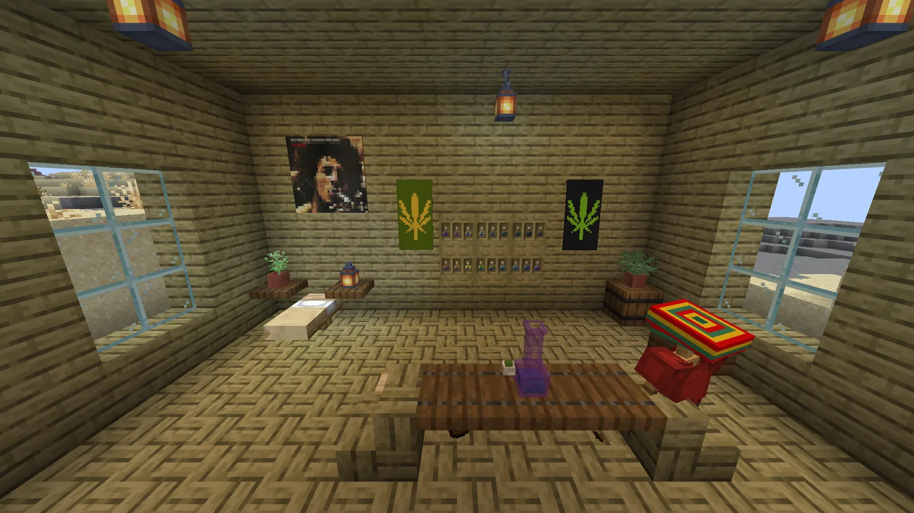
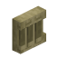
Hemp Shelf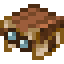
Hemp HarnessThe bed works like any bed, villagers included. It does burn, being wool. The harness goes on a happy ghast. Put a hemp leaf in a loom for the banner, you keep the leaf.
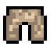
Harem pants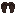
Flip-flopsThe full hemp outfit. Still not good armor, but it lasts as long as leather now, the shirt and pants take dye, the beanie keeps you out of powder snow, and the whole set halves your odds of coughing.
On the wiki: Hemp Materials Building Blocks Furniture and Decoration Hemp Outfit
Minecraft 26.1 and 26.2 brought sulfur cubes, potent sulfur, named times for /time and armour cut to a baby's size. The 26.x builds put all of it to work, so these come with the 26.2 and 26.3 downloads only, on Fabric and NeoForge.
Feed a hemp bale to a large sulfur cube. It stops bouncing, floats, and a punch pops it up about two blocks instead of away. Get a few friends and keep it in the air. Shears take the bale back.
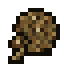
Hemp under a roof, glass included, can catch it. White powder, drifting spores, and it spreads to the plant next door. A quarter of a sick plant's buds come out as schwag. Fields never get it.
A green-out takes the ground from under you. Your feet slide when you stop and a hit sends you further. Standing still is safe. A cliff edge isn't.
/time set hempdustry:four_twenty, right next to day, noon and night.
Advancement number 43: eat something while you're under Hunger and too hungry to sprint. A good session and an empty fridge will do it.
A baby zombie, husk, drowned or piglin that picks up the hemp outfit wears it cut to its own size, dye and all, like it does with leather.
Any soil another mod puts in Minecraft's crop tags takes hemp seeds and grows them like it grows wheat. Nothing to set up.
On 26.3, REI works on NeoForge too (with Architectury API 22.0.5 or newer), and NeoForge kicks a footbag as hard as Fabric does. On NeoForge 26.2 a footbag gets about half the kick, and jelly legs slide without the extra knockback. A world moved up to 26.2 or 26.3 keeps everything it had. The wiki has the numbers.
Sulfur against mildew. Shears clear a sick plant in a trim window. Or put Minecraft's own potent sulfur under water: no plant its gas reaches catches mildew. Gas a plant while it flowers, though, and a tenth of its buds turn to schwag anyway, so take the water away once the flowers show.
On the wiki: Minecraft 26.2 and 26.3
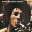
Seven paintings for the walls of your grow house. Marley is the new one.
A real tree that teaches the mod, with a few jokes hidden in it. Some are hidden for real. One is named after a Paris club where Baudelaire ate dawamesk.
Original tracks by Nefuß. Creepers drop them. Listen below.
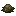
Every machine, both cauldron steps, and an "In the World" page for the stuff that has no recipe. EMI on 1.21.1.
On the wiki: Advancements Items and Blocks
Every mechanic has a switch, the machines talk to pipes, and the recipes and strains are plain data. Built to sit in a kitchen-sink pack without a fight.
config/hempdustry.json{
"effects": {
"enabled": false,
"greenOut": false
}
}Hemp only. Smoking and edibles give no effects, nobody greens out, and the farming, building and food all stay. /hempdustry reload applies it, no restart.
Read by the server (one small client section aside), with the same keys on every loader and version. A value out of range is pulled back into it and logged.
Ready-made presets (hemp only, no green-outs, fast farming, no loot) are on the Server Guide.
Every key in config/hempdustry.json, the same on every loader and version. Change what you need: the file keeps only that, and the mod fills in the rest at its defaults. Every key is explained on the Configuration page.
The server and every player run the same file. Fabric needs Fabric API, NeoForge and Forge nothing. Java 25 on 26.x, 21 on 1.21, 17 on 1.18.2, 8 on 1.16.5. Pick the file.
Every recipe, the Decarboxylator, Infuser and Hemp Press included, is a datapack recipe. KubeJS, CraftTweaker or a plain datapack can rebalance any of them.
Strains, hash included, are a datapack registry. Edit the shipped ones or add your own. They load with the world, not on /reload.
The Infuser and the Hemp Press pour into chests, hoppers and any storage, AE2 included. Dispensers water pots, fill trays and pour milk into the Infuser.
Grow pots and trays take anything in #c:fertilizers. Convention tags, compost and fuel hook into the rest of a pack with no code.
Since 1.21.2 a server doesn't send players its recipes, so on 1.21.11 and 26.x JEI shows the crafting recipes only if it's on the server too. The machine pages show either way.
Smoke, eat and infuse events, and a veto, on Fabric and on NeoForge. What addons build on stays put from one version to the next.
A world from any Hempdustry 2 version opens on every later one. A GanjaCraft or Hemp-Craft server converts on the Forge builds. Moving between Fabric and NeoForge isn't promised.
Allowed, monetized packs included, as long as the launcher downloads it. Set client.updateCheck to false so players aren't told about updates the pack can't take yet.
On the wiki: Server Guide Configuration Commands Modpack Guide Tags Datapacks Custom Strains Addon Development
Twelve languages, local slang included.
Version 2.1.0, stable and free. One file per Minecraft version and loader, and CurseForge always has the newest.
The newest. Everything in the mod, plus the 26.x extras.
hempdustry-fabric-2.1.0+26.3.jar
hempdustry-neoforge-2.1.0+26.3.jar
Everything in the mod, plus the 26.x extras.
hempdustry-fabric-2.1.0+26.2.jar
hempdustry-neoforge-2.1.0+26.2.jar
The whole mod, shelf and harness included.
hempdustry-fabric-2.1.0+1.21.11.jar
hempdustry-neoforge-2.1.0+1.21.11.jar
Everything but three things 1.21.1 can't hold, and EMI on top.
hempdustry-fabric-2.1.0+1.21.1.jar
hempdustry-neoforge-2.1.0+1.21.1.jar
Forge only. Opens Hemp-Craft and GanjaCraft worlds and converts them.
hempdustry-forge-2.1.0+1.18.2.jar
Hempdustry on 1.18.2 is a Forge build. NeoForge doesn't exist on 1.18.2.
Forge only, where GanjaCraft started. Opens every GanjaCraft 1.16.5 world and converts it.
hempdustry-forge-2.1.0+1.16.5.jar
Hempdustry on 1.16.5 is a Forge build. NeoForge doesn't exist on 1.16.5.
On CurseForge, filter by your Minecraft version and take the file named as above. The older GanjaCraft files still listed there are a different mod.
mods folder.mods and start the game. A Hempdustry tab in the creative inventory means it loaded.On a server, the same jar goes on the server and on every player's game. Updating is swapping the jar: a world from any Hempdustry 2 version opens on every later one, nothing to do.
Keep it. The Forge builds open it and turn it into a Hempdustry world as it loads. No tool to run, nothing to set up.
Every Forge 1.16.5 build opens: the original BETA v0.4 to v0.5.1 and NotTyzo's 1.0.0 to 1.0.6. Crops keep their stage, blocks keep their shape, signs keep their text, and a packed bong stays packed.
All three Hemp-Craft builds open on the 1.18.2 file, and so does a GanjaCraft 1.16.5 world. Seeds, crops, blocks, signs with their text and packed gear come through, and a Hemp Farmer carries on as a vanilla Farmer.
mods. Don't run both mods together.A converted 1.16.5 world can move on up to the newer Minecraft versions too. The wiki says what to know first.
The site is the tour. The wiki has the numbers: grow times, effect lengths, recipes, every config key, the tags and the addon API. 41 pages, for players, server owners and pack makers.
Ideas for after 2.1. No dates, it's ready when it's ready, and names can change before anything ships.
On the wiki: Roadmap
The code has been open since day one, and nothing is behind a paywall. Read it, fork it, build it yourself, send a pull request.
Code and data
Read it, change it, even sell it. Ship a changed jar and you publish your source too.
The licenceArt and music
Share and remix the textures, the paintings and both discs. Credit them, keep it non-commercial, pass the same licence on.
The licenceBuild it yourself$ git clone https://github.com/warlon-mhite/hempdustry-fabric.git
$ cd hempdustry-fabric
# one branch per Minecraft version, below
$ git switch 26.3-2.1
$ ./gradlew build26.3-2.126.2-2.12.11.21.1-2.11.18.2-2.11.16.5-2.1Gradle comes with the repository and fetches Minecraft and the loaders itself. You need a JDK: 25 and 21 on 26.x, 21 on 1.21, 17 on 1.18.2, 17 and 8 on 1.16.5. Building from Source has the rest.
Put it in my modpack, a monetized one too, when the launcher downloads it. Nothing owed.
Run it on my server, with ads, ranks or a store. Nothing owed.
Fork it or ship a changed jar. Non-commercially, with your source published.
Bundle the jar in a pack file or mirror it. Non-commercially, with CREDITS.md kept beside it.
Use the music or art in a fan video or a wiki. Non-commercially, credited to Nefuß or Hempdustry.
Sell merch or a paid product with the art or music. Ask Nefuß for the music, Warlon for the rest. The answer is usually yes.
A few textures are Minecraft's own with new colours and stay Mojang's. CREDITS.md has the full picture, licence by licence.
On the wiki: Contributing Building from Source Translating Addon Development
A lockdown project, a ban over one word, a fork that went its own way and a rewrite from scratch. The wacky story of the mod, told by the one who made it.
Beta 1.7.4
I go by Warlon Mhite. I've played Minecraft since Beta 1.7.4 and was tinkering with its files as a kid, through texture packs, long before I touched any real code. Pipix got me into modding, if memory serves.
2021 · Forge 1.16.5
During the COVID pandemic, bored and admittedly a bit of a stoner, I noticed there wasn't a decent cannabis mod for any recent Minecraft. MCreator made that gap easy to fill. GanjaCraft was rough, but it worked, and it found a small and genuinely enthusiastic crowd.
Next
Then came Brewevolution, a beer and tavern RP mod made with a school friend. It did a lot better than GanjaCraft ever did, partly thanks to bstylia14's video showcasing it at 4:20 (I don't think that's a coincidence). It's also where MCreator's limits started showing. Life got busy in ways that had nothing to do with Minecraft, and both mods went quiet for a while.
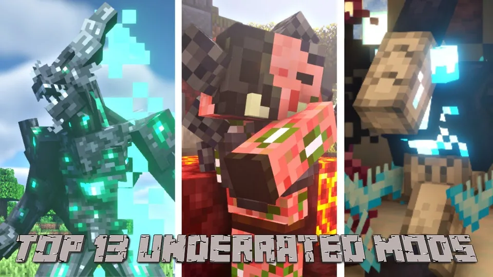
2022–2023 · Forge 1.16 to 1.18
Meanwhile NotTyzo rewrote GanjaCraft properly in Java for the Reforged Network server, with my permission, starting on 1.16 and bringing it up to 1.18, and even worked with me on some details. Then CurseForge banned the mod for having "ganja" in its name. It became Hempdustry, and shortly after Hemp-Craft, which is still maintained on several loaders.
2025 · Fabric 1.21
In 2025 I started my own rewrite from scratch on Fabric 1.21, mostly to relearn real Java modding, and after another long gap decided to actually finish it properly. The name is a small nod to the Hempdustry that came after mine and didn't make it.
2026 · Version 2.1
Since 2.1 it runs on NeoForge too, so it's back on the Forge side of the fence where GanjaCraft started, and on old Forge itself for 1.16.5 and 1.18.2, where it picks up a GanjaCraft or Hemp-Craft world right where you left it.
FabricNeoForgeForge
1.16.5 → 26.3
On the wiki: About and credits Design Notes 1.16.5 and GanjaCraft 1.18.2 and Hemp-Craft
The Discord from the GanjaCraft days never closed. It's quiet, but it's the easiest place to report a bug, suggest a feature, or tell me the Lemon Haze grow time is too slow (get a hydro tray).
Discord server
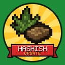
Hempdustry 2 + Brewevolution
online members
Something crashed, broke or looks wrong. Say which loader and Minecraft version, and a log if there is one.
Ideas are welcome. Coming next shows what's already planned.
Fields, grow rooms, hash labs, hempcrete houses. Screenshots welcome.
Install trouble, configs, a modpack that won't start. The wiki answers most of it first.
All three. Fabric and NeoForge on Minecraft 26.3, 26.2, 1.21.11 and 1.21.1, Forge on 1.18.2 and 1.16.5. Same mod, same blocks, same numbers. Each loader has its own file for each version, so pick the one that matches your game: the download picker lists them all.
Whichever your world or modpack is on. Every build has the whole mod, minus what its Minecraft can't hold. 26.2 and 26.3 add a few extras only the new Minecraft can do, 1.21.1 misses the shelf, the harness and canvas bundles, and 1.18.2 and 1.16.5 miss a few more, listed with each file. Coming from GanjaCraft or Hemp-Craft, take the Forge build that opens your world. Moving a world up a version keeps everything in it.
On Fabric, just Fabric API, on both client and server. On NeoForge and Forge, nothing. JEI and REI are optional and get their own recipe pages, EMI too on 1.21.1. On NeoForge 26.2 and on 1.16.5 it's JEI only, since REI doesn't run there. It's built to not fight with the usual kitchen-sink modpacks.
Yes. 2.1.0 is a stable release on all three loaders, played in a real client on every build before it went out. A world made with any version of Hempdustry 2 opens on every later one, with nothing for you to do. Bug reports are still welcome.
Hempdustry 2 is Java Edition only: Fabric and NeoForge for 26.3, 26.2, 1.21.11 and 1.21.1, and Forge for 1.18.2 and 1.16.5. No Bedrock or Pocket Edition, and no build for the versions in between. The CurseForge page also still holds the old GanjaCraft files for 1.16.5 and 1.18; they're a different mod. The Hempdustry files are the ones named hempdustry-….
Yes. Set effects.enabled and effects.greenOut to false in config/hempdustry.json and nothing gets anyone high or greens anyone out. The farming, building and food all stay. More switches.
Same mod, new name. Platforms weren't fond of "ganja" in a listing title, so this rewrite ships as Hempdustry 2. The old GanjaCraft still exists as a historical footnote, not a separate project. Still got a GanjaCraft world, or a Hemp-Craft one? The Forge builds open it and convert it.
Yes, monetized packs included, as long as the launcher downloads it. Mirroring, modifying and forking are fine too, with credit, non-commercially. Only a commercial use needs to ask. CREDITS.md has the details.